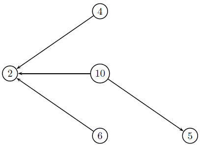
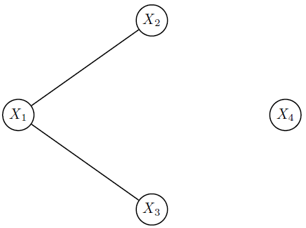
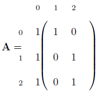
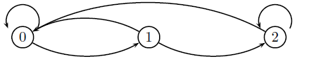
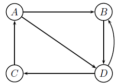
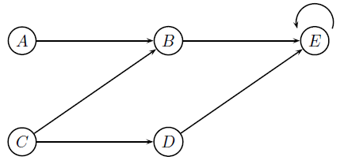
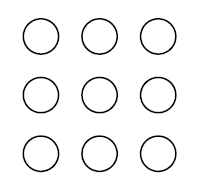

6 Notas
6.1 Introdução
Este capítulo destina-se enumerar uma série de resultados que serão utilizados posteriormente. Tais resultados já são de conhecimento dos alunos que cursam processos estocásticos e servem unicamente para revisão. É importante ressaltar que este capítulo é colocado neste momento por motivos didáticos, mas que poderia perfeitamente fazer parte de um apêndice, pois a maioria dos resultados será utilizada poucas vezes.
6.2 Resultados importantes
Nesta seção, apresentamos alguns resultados de séries e de análise combinatória.
Definição
Definição 6.1 A sequência \(a_1,a_2,\ldots\) será um progressão aritmética (PA) se \(a_i=a_1+(i-1)r\) para \(i=1,2,3,\ldots\) e \(r\in \mathbb{R}\).
Exemplo: Soma de uma PA
Exemplo 6.1 Talvez você já conheça a demonstração da fórmula da soma finita de \(n\) termos de uma PA, denotada por \(S_n\). Vamos demonstrar essa fórmula utilizando nosso conhecimento de probabilidade. Seja \(X\) a variável aleatória que assume qualquer valor no conjunto \(\{a_1,\ldots,a_n\}\) e atribui probabilidade \(1/n\) para cada ponto. Então \[E(X)=\frac{a_1+\cdots +a_n}{n}=\frac{S_n}{n}.\] Por definição, \(E(X)\) é o baricentro da distribuição e, como cada ponto possui a mesma probabilidade e todos eles são equidistantes, o baricentro será o ponto médio do conjunto \(\{a_1,\ldots,a_n\}\). Assim, \[E(X) =\frac{a_1+a_n}{2}.\] Igualando as duas equações acima teremos \[\begin{equation} S_n=\frac{(a_1+a_n)n}{2}. \end{equation}\]
Definição
Definição 6.2 A sequência \(a_1,a_2,\ldots\) será um progressão geométrica (PG) se \(a_i=a_1q^{i-1}\) para \(i=1,2,3,\ldots\) e \(q\neq 0\).
Exemplo
Exemplo 6.2 Certo vírus de computador cria uma cópia de si mesmo a cada segundo. Cada nova cópia gerada procede da mesma maneira.
- Quantas cópias deste vírus teremos em uma hora?
- Cada cópia possui 1Kb. Quanto tempo é necessário para que os vírus ocupem 1Tb?
Resolução:
Seja \(X_i\) o número de cópias no segundo \(i\), sneo que \(X_0=1\). Como apenas um vírus está no computador, no primeiro segundo ele fará uma cópia de si mesmo, gerando \(X_1=2\). No segundo, existem dois vírus e cada um fará uma cópia de si mesmo, gerando \(X_2=4\). Um raciocínio análogo mostra que \(\{X_0,X_1,X_2,\ldots\}=\{2,4,8,16,\ldots\}\). Assim, temos um PG com \(q=2\). Identificando \(a_1\) com \(X_0\), é fácil ver que \(X_t=2^t\) e que
\[X_{3600}=2^{3600}.\]
Agora, sabendo que um terabyte equivale a \(10^9\) kilobytes, temos que \[X_t=10^9=2^t\Rightarrow t = \frac{9\log 10}{\log 2}\approx 29,89,\] logo, serão necessários 30 segundos para que os vírus ocupem 1Tb de espaço no disco rígido.
Exemplo: Soma de uma PG
Exemplo 6.3 Seja \(\{a_1,\ldots,a_n\}\) uma PG se seja \(S_n=a_1+\cdots+ a_n.\) Notemos que
\[ \begin{align} S_1 &= a_1 \notag\\ S_2 &= S_1 + a_1q =a_1 (1+q)\notag\\ S_3 &= S_2 + a_1q^2 =a_1 (1+q+q^2)\notag\\ \cdots &= \cdots \notag\\ S_n &= S_{n-1} + a_1q^{n-1} =a_1 (1+q+\cdots q^{n-1}),\\ \end{align} \tag{6.1}\]
e que
\[\begin{align} qS_n = a_1(q+q^2+\cdots + q^n). \end{align} \tag{6.2}\] De Equação 6.1 e Equação 6.2, temos que
\[\begin{align} S_n - qS_n =a_1(1-q^n) \Rightarrow S_n = a_1\frac{1-q^n}{1-q}. \end{align}\]Em especial, se \(q\in (0,1)\), então \(q^n\rightarrow 0\) quando \(n\rightarrow\infty\) e
\[ \begin{align} \lim_{n\rightarrow\infty}S_n = \frac{a_1}{1-q}. \end{align} \tag{6.3}\]
Exemplo: Valor esperado da geométrica
Exemplo 6.4 Se \(X\) assume valores inteiros não negativos, então \(E(X)=\sum_{x=0}^{\infty}(1-F(x))\). Seja \(X\sim\hbox{Geometrica}_1(q)\), onde
\[P(X=x)=q(1-q)^{x},\quad x=0,1,2,\ldots\]
e \(q\in(0,1)\). Em particular, utilizando Equação 6.3 temos que
\[ \begin{align} 1-F(x)=P(X>x)=\sum_{y=x+1}^\infty q(1-q)^y=(1-q)^{x+1}. \end{align}\] Assim, utilizando Equação 6.3 novamente, teremos \[\begin{align} E(X)=\sum_{x=0}^{\infty}(1-q)^{x+1}=(1-q)\sum_{x=0}^{\infty}(1-q)^{x}=\frac{1-q}{q}. \end{align} \]
Teorema: Binomial
Teorema 6.1 Para \(n\) natural, \(x,y>0\) teremos \[\begin{align} (x+y)^n=\sum_{t=0}^n{n\choose t}x^ty^{n-t}. \end{align}\]
Exemplo: Função geratriz de momentos da Binomial
Exemplo 6.5 Seja \(X\sim\hbox{Binomial}(n,\theta)\). Então, sua função geratriz de momentos será \[\begin{align*} M_X(t)&=\sum_{x=0}^ne^{tx}{n \choose x}\theta^x(1-\theta)^{n-x}=\sum_{x=0}^n{n \choose x}(\theta e^{t})^x(1-\theta)^{n-x}=(\theta e^{t}+1-\theta)^n. \end{align*}\]
Teorema: Multinomial
Teorema 6.2 Seja \({\bf n}=(n_1,n_2,\ldots,n_k)\). Então, para \(x_1,\ldots,x_k>0\), teremos \[\begin{align} (x_1+x_2+\cdots+ x_k)^n =\sum_{ \{ {\bf n}: \sum_{i=1}^{k}n_i=n \}} \frac{n!}{n_1! n_2!\ldots n_k!}x_1^{n_1}x_2^{n_2}\ldots x_k^{n_k} \end{align}\]
Definição
Definição 6.3 Definimos a constante de Euler, representada por \(e\), como \(e = \lim_{n\rightarrow\infty}\left(1+\frac{1}{n}\right)^n.\)
Entretanto, ela pode ser encontrada de outros modos. Abaixo, apresentamos outra forma.
Proposição
Proposição 6.1 A constante de Euler pode ser escrita como \[\begin{align*} e=\sum_{t=0}^{\infty} \frac{1}{t!}. \end{align*}\]
Demonstração: Utilizando o Teorema 6.1: \[\begin{align*}
\left(1+\frac{1}{n}\right)^n&=\sum_{t=0}^{n}{n\choose t}\frac{1}{n^t}=\sum_{t=0}^{n}\frac{1}{t!}\frac{n(n-1)\ldots(n-t+1)}{n^t}
\\&=\sum_{t=0}^{n}\frac{1}{t!}\left(1-\frac{1}{n}\right)\left(1-\frac{2}{n}\right)\ldots\left(1-\frac{t-1}{n}\right)
\end{align*}\] Podemos notar que \[\begin{align*}
\lim_{n\rightarrow\infty}\frac{1}{t!}\left(1-\frac{1}{n}\right)\left(1-\frac{2}{n}\right)\ldots\left(1-\frac{t-1}{n}\right)=\frac{1}{t!}
\end{align*}\] Vamos utilizar (sem provar) que é válida a seguinte equação: \[\begin{align*}
\lim_{n\rightarrow\infty}\sum_{t=0}^{n}{n\choose t}\frac{1}{n^t}=\sum_{t=0}^{\infty}\lim_{n\rightarrow\infty}{n\choose t}\frac{1}{n^t}.
\end{align*}\] Assim, \[\begin{equation}
e=\sum_{x=0}^{\infty}\frac{1}{t!}.
\end{equation}\]
Além disso, teremos a seguinte proposição:
Proposição
Proposição 6.2 Para qualquer \(\theta\) real teremos \[\begin{equation} \sum_{x=0}^\infty\frac{\theta^x}{x!}=e^\theta. \end{equation}\]
Demonstração: Podemos proceder de forma análoga ao que foi exposto na Proposição 6.1, fazendo apenas uma mudança de variável. Uma forma alternativa para demonstrar este resultado será explorada nos exercícios.
A função gama, definida abaixo, é utilizada em diversas distribuições de probabilidade.
Definição
Definição 6.4 A função gama é definida por \[\begin{equation} \Gamma(a)=\int_0^{\infty} t^{a-1}e^{-t}dt,\quad a>0. \end{equation}\]
A seguinte propriedade mostra que a função gama é uma generalização da função fatorial.
Proposição
Proposição 6.3 Demonstração:
Para \(\alpha>0\), \(\Gamma(\alpha+1)=\alpha\Gamma(\alpha)\).
\[\begin{align*} \Gamma(a)&=\int_0^{\infty} t^{a-1}e^{-t}dt,\quad \left(\hbox{fazendo $u=t^{a-1}$ e $dv=e^{-t}$}\right)\\ &=-\left. t^{a-1}e^{-t}\right|_0^{\infty}+\int_0^{\infty}(a-1)t^{a-2}e^{-t}dt\\ &=(a-1)\int_0^{\infty}t^{a-2}e^{-t}dt=(a-1)\Gamma(a-1) \end{align*}\] logo, \(\Gamma(a)=(a-1)\Gamma(a-1)\).
Em especial, notemos que \[\begin{align} \Gamma(1)=\int_0^\infty e^{-t}dt=1 \end{align}\] e \(\Gamma(2)=(2-1)\Gamma(1)=1\). O seguinte corolário pode ser provado por indução.
Corolário
Corolário 6.1 Se \(\alpha\) é um inteiro maior que zero, então \(\Gamma(\alpha)=(\alpha-1)!\).
Demonstração: Exercício 6.10
Assim, a função gama pode ser interpretada como uma versão contínua da função fatorial. Alguns valores de \(\Gamma(\alpha)\) são utilizados em algumas distribuições, como é o caso de \(\Gamma(1/2)\) na distribuição qui-quadrado.
Exemplo: O valor de \(\Gamma(1/2)\)
Exemplo 6.6 Existe um modo interessante de mostrar que \(\Gamma(1/2)=\sqrt{\pi}\), através da distribuição normal. Temos que \[\begin{align} \Gamma(1/2)&=\int_0^{\infty}x^{-1/2}e^{-x}dx \quad\left(\hbox{fazendo $x=u^2$ }\right) \notag \\&=2\int_0^\infty e^{-u^2}du. \end{align}\] Agora, tomemos \(Y\sim\hbox{Normal}(0,1/2)\). Sabemos que a densidade da normal é simétrica e que \[\begin{align} 1&=\int_{-\infty}^\infty \frac{1}{\sqrt{\pi}}e^{-y^2}dy=2\int_0^{\infty}\frac{1}{\sqrt{\pi}}e^{-y^2}dy=\frac{2}{\sqrt{\pi}}\int_0^\infty e^{-y^2}dy\notag \\ &\Rightarrow \int_0^\infty e^{-y^2}dy=\frac{\sqrt{\pi}}{2}. \end{align}\] Assim, \[\Gamma\left(\frac{1}{2}\right)=\sqrt{\pi}.\]
Definimos a função gama incompleta como segue: \[\begin{equation} \Gamma_x(a)=\int_0^x t^{a-1}e^{-t}dt \end{equation}\]
6.3 Distribuições importantes
Discutiremos nesta seção as seguintes distribuições: exponencial, gama e Poisson.
6.3.1 Exponencial
Dizemos que a variável aleatória \(T\) possui distribuição exponencial com taxa \(\lambda\), (\(T\sim\hbox{Exponencial}(\lambda)\)) se sua densidade for \[\begin{equation} f(t)=\lambda e^{-\lambda t},\quad \lambda>0,\quad t>0. \end{equation}\] A função de distribuição da exponencial é
\[ \begin{align} F(x)=\int_0^x \lambda e^{-\lambda t}dt =1-e^{-\lambda x}, \end{align} \tag{6.4}\]
e seus momentos podem ser calculados como segue:
\[\begin{align*} E(T^k)&=\int_0^{\infty}t^k\lambda e^{-\lambda t}dt, \quad \left(\hbox{fazendo $\lambda t=u$}\right),\\ &=\frac{1}{\lambda^k}\int_0^\infty u^k e^{-u}du=\frac{\Gamma(k+1)}{\lambda^k}=\frac{k!}{\lambda^k}. \end{align*}\] Em especial, teremos \[\begin{align} E(T)&=\frac{\Gamma(2)}{\lambda}=\frac{1}{\lambda}\\ E(T^2)&=\frac{\Gamma(3)}{\lambda^2}=\frac{2}{\lambda^2}\\ Var(T)&=\frac{1}{\lambda^2} \end{align}\] A função geratriz de momentos da exponencial é \[\begin{align} M_X(t)=E(e^{tX})=\int_0^\infty \lambda e^{-x(\lambda - t)}dx=\frac{\lambda}{\lambda-t},\quad t<\lambda. \end{align}\]
Exemplo: Falta de Memória
Exemplo 6.7 Suponha que o tempo de vida de uma lâmpada possui distribuição exponencial com média 2 anos. Você liga essa lâmpada uma vez e sai para viajar por um ano. Quando Você volta, a lâmpada ainda está ligada. Qual a probabilidade da lâmpada durar mais um ano? Seja \(T\) o tempo de vida da lâmpada. O evento lâmpada não queimou no primeiro ano é dado por \(\{T>1\}\). De modo análogo, o evento no qual a lâmpada dura dois anos é \(\{T>2\}\). Assim, a probabilidade da lâmpada durar dois anos dado que ela durou um ano é \[P(T>2|T>1)\] O fato curioso é que essa probabilidade é mesma de que uma lâmpada nova do mesmo tipo dure um ano! Isso acontece porque a distribuição exponencial possui a propriedade de falta de memória. Vamos mostrar isso de um modo geral: seja \(T\sim\hbox{Exponencial}(\lambda)\) e sejam \(t,s>0\). Então
Exemplo: Mínimo de exponenciais
Exemplo 6.8 Sejam \(T_1\) e \(T_2\) variáveis aleatórias independentes com distribuição exponencial com taxas \(\lambda_1\) e \(\lambda_2\), respectivamente. Seja \(M_2=\min\{T_1,T_2\}\). Notemos que, se \(M_2>m\), então \(T_1\) e \(T_2\) devem ser maiores de \(m\). Disto, teremos
\[\begin{align*} 1-F_{M_2}(m)&=P(M_2> m)=P(T_1>m,T_2>m)=e^{-(\lambda_1+\lambda_2)m}, \end{align*}\] logo \(F_{M_2}(m)=1-\exp\left\{-(\lambda_1+\lambda_2)m\right\}\). Notando que \(F_{M_2}\) é da mesma forma que Equação 6.4, teremos que \(M_2\sim\hbox{Exponencial}(\lambda_1+\lambda_2)\).
É fácil mostrar que \(M_n=\min\{X_1,\ldots,X_n\}\sim\hbox{Exponencial}(\lambda_1+\cdots+\lambda_n)\).
Exemplo: Dois atletas
Exemplo 6.9 Dois atletas disputam uma corrida. É sabido que o atleta \(A\) demora \(T_A\) minutos para terminar a prova, enquanto que o \(B\) demora \(T_B\) minutos. Se \(T_i\sim\hbox{Exponencial}(\lambda_i)\), onde \(i\in\{A,B\}\) e \(T_A\) é independente de \(T_B\), qual a probabilidade de que o atleta \(A\) ganhe a prova?
Resolução:
O atleta \(A\) ganhará a prova se \(T_A<T_B\). Assim,
\[ \begin{align} P(T_A<T_B)&=\int_0^\infty P(T_A<T_B|T_B=t)f_{T_B}(t)dt \\&= \int_0^\infty P(T_A<t|T_B=t)f_{T_B}(t), \quad \hbox{por independência}\\ &=\int_0^\infty F_{T_A}(t)f_{T_B}(t)dt = \int_0^\infty (1-e^{-\lambda_A t})\lambda_B e^{-\lambda_B t}\\ &= 1-\lambda_B\int_{0}^\infty e^{-(\lambda_A+\lambda_B)t}dt = \frac{\lambda_A}{\lambda_A+\lambda_B}. \end{align} \]
O resultado acima pode ser facilmente generalizado para o caso de \(n\) atletas (ver Exercício 6.20).
6.3.2 Gama
Dizemos que a variável aleatória \(S\) possui distribuição gama com parâmetros \(\alpha\) e \(\beta\) (notação \(S\sim\hbox{Gama}(\alpha,\beta)\)) se sua densidade for como segue
\[\begin{equation} f(s)=\frac{\beta^\alpha}{\Gamma(\alpha)}s^{\alpha-1}e^{-\beta s},\quad s,\alpha,\beta>0. \end{equation}\]Sua função distribuição será dada por
\[\begin{align} F(s)&=\frac{\beta^\alpha}{\Gamma(\alpha)}\int_0^s x^{\alpha-1}e^{-\beta x}dx, \quad \left(\hbox{ fazendo $u=\beta x$}\right)\notag\\ &=\frac{1}{\Gamma(\alpha)}\int_0^{\beta s} u^{\alpha-1}e^{-u}du =\frac{\Gamma_{\beta s}(\alpha)}{\Gamma(\alpha)}. \end{align}\]Momentos:
\[\begin{align} E(S^k)&=\int_0^\infty s^k\frac{\beta^\alpha}{\Gamma(\alpha)}s^{\alpha-1}e^{-\beta s}ds=\frac{\beta^{\alpha}}{\Gamma(\alpha)}\int_0^\infty s^{\alpha+k-1}e^{-\beta s}ds,\quad\left(\hbox{ fazendo $u=\beta s$}\right),\notag\\ &=\frac{\beta^\alpha}{\Gamma(\alpha)}\beta^{-k-\alpha}\int_0^\infty u^{\alpha+k}e^{-u}du =\frac{\Gamma(\alpha+k)}{\beta^k\Gamma(\alpha)} \end{align}\]Em especial,
\[\begin{align} E(S)&=\frac{\alpha}{\beta}\\ E(S^2)&=\frac{(\alpha+1)\alpha}{\beta^2}=\left(E(S)+\frac{1}{\beta}\right)E(S)\\ V(S)&=\frac{E(S)}{\beta}=\frac{\alpha}{\beta^2} \end{align}\]A função geratriz de momentos de \(S\) é dada por
\[\begin{align} M_S(t)=E(e^{ts})=\int_0^\infty \frac{\beta^\alpha }{\Gamma(\alpha)}s^{\alpha-1}e^{-s(\beta-t)}ds =\left(\frac{\beta}{\beta-t}\right)^\alpha,\quad t<\beta. \end{align}\]
Exemplo: Gama Inversa
Exemplo 6.10 Seja \(S\sim \hbox{Gama}(\alpha,\beta)\). Seja \(Z=1/S\). Podemos notar que \[P(Z\leq z )=P(S\geq 1/z)= F_S(1/z),\] logo \[\begin{equation} f_Z(z) = f_S(1/z)\frac{1}{z^2}=\frac{\beta^\alpha}{\Gamma(\alpha)}\left(\frac{1}{z}\right)^{\alpha+1}e^{\frac{\beta}{z}}, \end{equation}\] onde \(z>0\). Essa distribuição é denominada gama inversa. Notação: \(Z\sim\hbox{GI}(\alpha,\beta)\).
6.3.3 Poisson
Dizemos que a variável \(N\) possui distribuição Poisson com taxa \(\lambda\) (\(N\sim\hbox{Poisson}(\lambda)\)), se
\[\begin{equation} P(N=n)=\frac{e^{-\lambda}\lambda^n}{n!} \end{equation}\]Função geratriz de momentos
\[ \begin{align} M_N(t)&=\sum_{n=0}^\infty e^{nt}\frac{e^{-\lambda}\lambda^n}{n!}=e^{-\lambda}\sum_{n=0}^\infty \frac{[\lambda e^{t}]^n}{n!}=\exp\{-\lambda(1-e^t)\} \end{align} \tag{6.5}\]
Em especial
\[\begin{align} \frac{d}{dt}M_N(t)&=\lambda e^t M_N(t),\Rightarrow E(N)= \lambda\\ \frac{d^2}{dt^2}M_N(t)&=\lambda e^t M_N(t)+\lambda^2 e^{2t}M_N(t),\Rightarrow E(N^2)=\lambda +\lambda^2\\ V(N)=\lambda \end{align}\]
Exemplo: Soma de Poissons
Exemplo 6.11 Sejam \(X_1,\ldots,X_n\) variáveis aleatórias com distribuição Poisson com taxas \(\lambda_1,\ldots,\lambda_n\). Notemos que \[\begin{align} M_{X_1+\cdots +X_n}(t)&=\prod_{i=1}^n M_{X_i}(t)=\exp\{-(\lambda_1+\cdots+\lambda_n)(1-e^t)\} \end{align}\] Logo, \(X_1+\cdots+X_n\sim\hbox{Poisson}(\lambda_1+\cdots+\lambda_n)\). Assim, soma devariáveis aleatórias independentes com distribuição Poisson tambéem possuem distribuição Poisson.
Exemplo: Condicionando somas de Poissons
Exemplo 6.12 Outro resultado interessante: Sejam \(N_1,N_2\) variáveis aleatórias independentes com distribuição Poisson com taxas \(\lambda_1\) e \(\lambda_2\). Sejam \(N=N_1+N_2\). Então \((N_1|N)\sim\hbox{Binomial}(N,p)\), onde \(p=\lambda_1/(\lambda_1+\lambda_2)\). De fato, \[\begin{align} P(N_1=n_1|N=n)&=\frac{P(N_1=n_1,N_1+N_2=n)}{P(N=n)}=\frac{P(N_1=n_1,N_2=n-n_1)}{P(N=n)}\notag\\&= \frac{e^{-\lambda_1}\lambda_1^{n_1}}{n_1!}\frac{e^{-\lambda_2}\lambda_2^{n-n_1}}{(n-n_1)!}\frac{n!}{e^{-\lambda_1-\lambda_2}(\lambda_1+\lambda_2)^{n-n_1}}\notag\\ &={n\choose n_1}\left(\frac{\lambda_1}{\lambda_1+\lambda_2}\right)^{n_1}\left(\frac{\lambda_2}{\lambda_1+\lambda_2}\right)^{n-n_1} \end{align}\]
Exemplo: Aproximação da Binomial para a Poisson
Exemplo 6.13 Seja \(X\sim\hbox{Binomial}(n,p)\). Pelo Exemplo 6.5, temos que \[M_X(t)= (1-p(1-e^t))^n.\] Façamos \(\lambda=pn\). Então
\[\begin{align} \lim_{n\rightarrow \infty}M_X(t)=\lim_{x\rightarrow\infty}\left(1-\frac{\lambda}{n}(1-e^t)\right)^{n}=e^{\lambda(1-e^t)}. \end{align} \tag{6.6}\]
Comparando a Equação 6.6 com Equação 6.5, podemos perceber que \(X\) se aproxima da distribuiçao Poisson com taxa \(\lambda=np\).
6.4 Esperança condicional
Neste curso, será comum avaliarmos a ocorrência de uma variável aleatória condicionada a outra. Por exemplo, seja \(X\) o número de itens comprados por um cliente em um supermercado e seja \(Y\) o número de clientes no supermercado em um dia. Suponha que \(X\sim\hbox{Poisson}(\lambda)\) e \(Y\sim\hbox{Poisson}(\delta)\). Qual o número de esperado de itens vendidos em um dia?
Neste problema, sabemos que o número de itens vendidos será \(W=X_1+\cdots+X_Y\), onde \(X_i\) É o número de itens comprados pelo \(i\)-ésimo cliente. Contudo, não conhecemos a distribuição de \(W\), pois \(Y\) é desconhecido. É claro que esta distribuição pode ser obtida pela relação. \[\begin{align*} P(W=w)=\sum_{y=0}^{\infty}P(W=w|Y=y)P(Y=y). \end{align*}\] A distribuição \(W|Y\) \é conhecida, pois, uma vez que \(Y\) está fixado, \(W\) é equivalente a soma de \(Y\) variáveis independentes com distribuição Poisson, ou seja, \(W|Y\sim\hbox{Poisson}(Y\lambda)\). Já a distribuição de \(W\) é difícil de lidar. Entretanto, podemos encontrar o valor esperado de \(W\) através dos valores esperados de \(W|Y\) e \(Y\). De fato, teremos que
\[\begin{align} E(W)&=\sum_{w=\infty}^{\infty}wP(W=w)=\sum_{w=\infty}^{\infty}\sum_{y=\infty}^{\infty}wP(W=w,Y=y)\notag\\ &=\sum_{w=\infty}^{\infty}\sum_{y=\infty}^{\infty}wP(W=w|Y=y)P(Y=y)\notag\\ &=\sum_{y=\infty}^{\infty}\sum_{w=\infty}^{\infty}wP(W=w|Y=y)P(Y=y)\notag\\ &=\sum_{y=\infty}^{\infty}E(W|Y)P(Y=y)=E_Y\left(E(W|Y)\right). \end{align}\] Desde que as esperanas envolvidas existam, a equação acima é válida tanto para variáveis discretas quanto para contínuas. Voltanto ao problema dos itens no supermercado, teremos que \[\begin{align*} E(W)&=E_Y\left(E(W|Y)\right)=E_Y\left(\lambda Y\right)=\delta\lambda. \end{align*}\] Fica como exercício mostrar que, se \(E(X^k|Y)<\infty\) e \(E(Y^k)<\infty\), então \[\begin{align} E(X^k)=E_Y\left(E(X^k|Y)\right). \end{align}\] Com a última igualdade, podemos mostrar que \[\begin{align} V(X)&=E_Y\left(E(X^2|Y)\right) - \left[E_Y\left(E(X|Y)\right)\right]^2\pm E_Y(E(X|Y)^2)\notag\\ &=\left(E_Y\left(E(X^2|Y)\right) - E_Y(E(X|Y)^2)\right)+\left(E_Y(E(X|Y)^2)- \left[E_Y\left(E(X|Y)\right)\right]^2\right)\notag\\ &=E_Y\left[E(X^2|Y)-E(X|Y)^2)\right]+V_Y\left[E(X|Y)\right]\notag\\ &=E_Y\left[V(X|Y)\right]+V_Y\left[E(X|Y)\right] \end{align}\] Aplicando esta última identidade no problema dos itens do supermercado, teremos que \[V(W)=E_Y(\lambda Y)+V_Y(\lambda Y)=\lambda\delta +\lambda^2\delta=\delta\lambda(1-\lambda).\]
6.5 Inferência
Esse tópico será inserido em outro curso.
6.6 Teoria dos grafos
Nesta seção, mostraremos o conceito básico de grafos. A experiência diz que alguns conceitos de processos estocásticos, como as cadeias de Markov, são melhor compreendidos com o uso dessa ferramenta. O leitor interessado no uso de grafos, pode consultar os livros XX e YY.
Definição
Definição 6.5 Seja \(V\) um conjunto discreto, denominado conjunto dos vértices, e seja \(E\) um conjunto de arestas, onde dizemos que existe uma aresta entre os vértices \((v,w)\) se ambos estão relacionados. A dupla \(G=(V,E)\) é denominada grafo.
Em termos didáticos, grafos simples oferecem a vantagem de uma fácil visualização gráfica: cada vértice pode ser representado por um ponto no plano e as arestas podem ser representadas por linhas unindo os pontos se estes estão relacionados.
Exemplo: Arestas orientadas
Definição 6.6 Dizemos que uma aresta é orientada quando a relação entre o par \((x,y)\) não necessariamente é válida para o par \((y,x)\). Por exemplo, seja \(V=\{2,6,4,5,10\}\) e seja \(E\) o conjunto de arestas tal que existe a aresta \((x,y)\) se \(x\) é divisível por \(y\), com \(x\neq y\). Existe a aresta \((4,2)\), pois 4 é divisível por 2, mas não existe a aresta \((2,4)\) pois 2 não é divisível por \(4\). As arestas existentes são: \((4,2),(6,2),(10,2)\) e \((10,5)\). A representação gráfica deste grafo é dada a seguir
Note que em um grafo orientado, uma seta é colocada na aresta para indicar a direção da relação.
Neste texto, arestas orientadas serão denominadas arcos. Além disso, o arco \((v,v)\) será denominado laço.
Exemplo: Grafos de dependência
Exemplo 6.14 Considere as variáveis \(X_1,X_2,X_3,X_4\) onde \(X_1|X_2,X_3\) é independente de \(X_4\), \(X_3\) é independente de \(X_4\) e \(X_2\) é dependente de \(X_4\). Um grafo de dependências é construído da seguinte forma:
- Faça \(V=\{X_1,X_2,X_3,X_4\}\)
- Crie a aresta \(v,w\) se as variáveis aleatórias \(v\) e \(w\) são dependentes.
Se \(Y\) é dependente de \(Z\), então \(Z\) é dependente de \(Y\). Assim, as arestas deste grafo não são orientadas. Para esse exemplo, temos as seguintes arestas
- \(e_1: (X_1,X_2)\) pois \(X_1\) é dependente de \(X_2\)
- \(e_2: (X_1,X_3)\) pois \(X_1\) é dependente de \(X_3\)
O grafo de dependências será dado por \(G=(V,E)\), onde \(E=\{e_1,e_2,e_3\}\). Esse grafo pode ser representado graficamente como segue:

Notemos que as arestas não possuem setas (se \(A\) é dependente de \(B\), então \(B\) é dependente de \(A\)). Algumas conclusões podem ser tiradas: Os vértices \(X_1,X_2,X_3\) são independentes de \(X_4\) (não existem arestas ligando os primeiros vértices a \(X_4\)) e, dado \(X_1\), \(X_2\) e \(X_3\) são independentes (retirando \(X_1\), o caminho entre \(X_2\) e \(X_3\) some).
Ao longo deste curso, utilizaremos apenas grafos orientados. Além disso, em muitos momentos apresentaremos a representação gráfica de um grafo como sendo o grafo. Isso é um abuso de linguagem, uma vez que o grafo é uma entidade matemática bem definida. Outro conceito importante é dado a seguir.
Definição
Definição 6.7 A matriz \(A\) na qual o elemento \((i,j)\) é igual a 1 se existe a aresta \((i,j)\) e 0 em caso contrário é denominada matriz de adjacências.
A matriz de adjacências também é utilizada para definir o grafo, uma vez que ela contém todos os vértices e todas as arestas do grafo. Considere a seguinte matriz de adjacências, onde os rótulos das linhas e colunas correspondem aos vértices do grafo.

Desta matriz, podemos concluir, por exemplo, que existe a aresta \((1,2)\), mas não existe a aresta \((2,1)\), fazendo deste um grafo orientado. A representação gráfica deste grafo é dada abaixo:

Imagine agora que um indivíduo se encontra no vértice zero. Em cada passo, o indivíduo pode seguir por um arco. A matriz de adjacências mostra quais são os possíveis lugares que este indivíduo pode chegar após dar um passo. Assim, essa matriz também é denominada matriz de transição um passo à frente. Um aspecto importante de um grafo é saber se é possível alcançar o vértice \(i\) através do vértice \(j\). Por exemplo, é possível sair do vértice zero e chegar no vértice 2? A resposta é: sim, basta seguir as arestas \((0,1)\) e \((1,2)\). Tal aspecto é denominado acessibilidade.
Definição
Definição 6.8 Dizemos que o vértice \(j\) é acessível a partir de \(i\) se existe uma sucessão de arcos que ligam o vértice \(i\) ao vértice \(j\). Denotamos isso por \(i\rightarrow j\). Se tal sucessão não existe, dizemos que \(j\) não é acessível a partir de \(i\) e denotamos este fator por \(i\nrightarrow j\).
Nota: por convenção, vamos assumir que sempre \(i\rightarrow i\), considerando que podemos voltar para \(i\) em zero passos.
É importante notarmos que a acessibilidade é invariante ao número de passos! No exemplo em estudo, \(0\rightarrow 1\), pois podemos sair do vértice 0 e chegar ao vértice 2 em dois passos. A matriz de adjacências nos mostra quais vértices estão acessíveis a partir de um passo, mas também podemos construir matrizes que nos mostrem os vértices acessíveis dois passos à frente, três passos, e assim por diante. Essa construção é fácil, como mostra a seguinte proposição.
Proposição
Proposição 6.4 Considere um grafo com matriz de transição \(\textbf{A}\). Seja \({\bf A}_n\) a matriz de transição \(n\) passos à frente (neste caso, \({\bf A}_1={\bf A}\)). Então \({\bf A}_n={\bf A}^n\).
Nota: a matriz \({\bf A}_n\) indica quantos caminhos existem entre cada par de vértices. Uma entrada igual a zero implica que aquele caminho não existe.
Para qualquer \(a_{ij}\in {\bf A}\), sabemos que \(a_{ij}=1\) se existe o arco \((i,j)\) e zero em caso contrário. Suponha que queremos verificar se \(j_0\) é acessível a partir de \(i_0\) em dois passos. Primeiro, vamos determinar todos os estados que podem ser alcançados um passo a frente à partir de \(i_0\). Depois, vamos verificar qual destes estados chega em \(j_0\). Sem perda de generalidade, assuma que existem \(n\) vértices no grafo. Consideremos então a seguinte soma:
\[ \begin{align} \sum_{l=1}^{n}a_{i_0,l}a_{i,j_0}=a_{i_0,1}a_{1,j_0}+a_{i_0,2}a_{2,j_0}+a_{i_0,3}a_{3,j_0}+\cdots+a_{i_0,n}a_{n,j_0} \end{align} \tag{6.7}\]
Se \(a_{i_0,1}a_{1,i0}=1\), então existem os arcos \((i_0,1)\) e \((1,j_0)\), indicando que existe um caminho em dois passos saindo de \(i_0\) e chegando em \(j_0\). Se \(a_{i_0,1}a_{1,j_0}=0\), então um dos dois arcos não existe, fazendo com que o caminho \((i_0,1)\) e \((1,j_0)\) não exista. Assim, a soma em Equação 6.7 indica quantos caminhos existem saindo de \(j_0\) e chegando a \(j_0\) em dois passos. Acontece que Equação 6.7 é exatamente elemento \((i_0,j_0)\) do produto matricial \({\bf A}{\bf A}\). Como \(i_0\) e \(j_0\) foram escolhidos arbitrariamente, temos que \[{\bf A}_2={\bf A}^2.\] A demonstração para todo \(n\) pode ser concluída facilmente por indução.
6.7 Exercícios
Seção 6.2
Exercício 6.1 Para qualquer \(n\geq 0\) inteiro, mostre que \[5^n = \sum_{x=0}^{n}{n\choose x}2^x 3^{n-x}.\]
Exercício 6.2 Mostre que
\(\sum_{x=0}^{n}{n\choose x}=2^n\)
\(\sum_{x=0}^{n}x{n\choose x}a^xb^{n-x}=na(a+b)^{n-1}\)
Exercício 6.3 Assumindo que \(r\neq 1\), demonstre os seguintes resultados:
\(\frac{d}{dr}\sum_{n=0}^{k}r^n=\sum_{n=0}^{k-1}nr^{n-1}\)
\(\sum_{n=0}^{k-1}nr^{n-1}=\frac{kr^{k+1}+1-(k+1)r^k}{(1-r)^2}\)
Exercício 6.4 Sejam \(n_1,n_2,n_3\) inteiros positivos. O conjunto \(\{n_1+n_2+n_3=n\}\) representa todos os valores possíveis de \(n_1,n_2\) e \(n_3\) tais que a soma destes é igual a \(n\). Assim, encontre todos os elementos dos seguintes conjuntos:
- \(\{n_1+n_2+n_3=0\}\)
- \(\{n_1+n_2+n_3=1\}\)
- \(\{n_1+n_2+n_3=2\}\)
- \(\{n_1+n_2+n_3=3\}\)
Exercício 6.5 Calcule \[\sum_{n_1+n_2+n_3+n_4=1}\frac{n!}{n_1!n_2!n_3!n_4!}2^{n_1}.\]
Exercício 6.6 Sejam \(x_1,x_2,x_3\) números reais positivos e seja \(n\geq 0\) inteiro. Utilize o Teorema 6.1 para mostrar que \[(x_1+x_2+x_3)^n=\sum_{u=0}^{n}{n\choose u}x_1^u(x_2+x_3)^{n-u}.\] Em seguida, utilize o Teorema Binomial novamente para mostrar que \[(x_1+x_2+x_3)^n=\sum_{u=0}^{n}\sum_{t=0}^{n-u}{n\choose u}{n-u\choose t}x_1^u x_2^tx_3^{n-u-t}.\] Por último, mostre que a expressão acima é equivalente a \[(x_1+x_2+x_3)^n=\sum_{n_1+n_2+n_3=n}\frac{n!}{n_1!n_2!n_3!}x_1^{n_1} x_2^{n_2}x_3^{n_3}.\]
Exercício 6.7 Encontre o valor de \(c\) tal que as seguintes funções sejam funções de probabilidade:
\(P(X=x)=cx,\quad x\in\{0,1,2,\ldots,N\}.\)
\(P(X=x)=ce^{-x},\quad x\in\{0,1,2,\ldots\}.\).
Exercício 6.8 Seja \(X\sim\hbox{Geometrica}_2(q)\), onde \[\begin{equation} P(X=x)=q(1-q)^{x-1},\quad x=1,2,3,\ldots \end{equation}\] Utilizando o resultado da soma de uma PG infinita, mostre que
\(F(x)=(1-q)^{x}\).
\(E(X)=1/q\).
Exercício 6.9 Uma função \(f\) pode ser escrita via séries de Taylor, da seguinte forma: \[f(x)=\sum_{n=0}^{\infty}\frac{f^{(n)}(y)}{n!}(x-y)^n,\] onde \(y\) é um ponto no mesmo domínio de \(x\) e \(f^{(n)}\) é a \(n\)-ésima derivada de \(f\) (sendo que \(f^{(0)}=f\)). Utilizando este resultado, prove que \[e^{\lambda}=\sum_{n=0}^{\infty} \frac{\lambda^n}{n!}.\]
Exercício 6.10
Exercício 6.10 Mostre que, se \(a\) for inteiro maior que zero, então \(\Gamma(a)=(a-1)!\)
Seção 6.3
Exercício 6.11
Exercício 6.11 O número de clientes por hora em uma loja tem distribuição Poisson com taxa 9 clientes/hora. A loja tem capacidade para 13 clientes. Encontre
- A probabilidade de que em uma hora existam mais de 10 clientes na loja.
- O número médio de clientes por hora na loja.
- O desvio padrão do número de clientes por hora na loja.
- Quando a loja está cheia, um novo cliente não entra. Qual é a probabilidade de que novos clientes não entrem na loja?
- O dono gostaria de diminuir a probabilidade acima para 5%. Para tanto, qual deveria ser a capacidade da loja?
Exercício 6.12 Seja \(N\sim\hbox{Poisson}(\lambda)\), com \(0<\lambda<1\). Mostre que \(E(N!)=e^{-\lambda}/(1-\lambda)\).
Exercício 6.13 Suponha que \(Y\sim\hbox{Poisson}(\theta)\). Calcule \(E(a^Y)\), onde \(a\) é uma constante.
Exercício 6.14 Sejam \(N_1,\ldots,N_d\) variáveis aleatórias independentes com distribuição Poisson com taxas \(\lambda_1,\ldots,\lambda_d\). Mostre que \((N_1,\ldots,N_d|N)\sim\hbox{Multinomial}(N,p_1,\ldots,p_d)\), onde \(p_i=\lambda_i/\sum_{j=0}^d\lambda_j\) e \(N=\sum_{i=1}^{d}N_i\).
Exercício 6.15 Seja \(X_i\) o número de acidentes aéreos na região \(i\in\{1,2,3,4\}\). Considere que \(X_i\sim\hbox{Poisson}(i)\) e que \(X_i\) é independente de \(X_j\) para todo \(i\neq j\). Em certo ano foram registrados \(12\) acidentes. Qual a probabilidade de que tenha ocorrido \((X_1=0,X_2=2,X_3=5,X_4=5)\)?
Exercício 6.16 Dizemos que \(X\sim\chi^2_n\) se sua densidade é da forma \[f(x)=\frac{1}{2^{n/2}\Gamma(n/2)}x^{\frac{n}{2}-1}e^{-x/2}.\] Mostre que \(E(X)=n\).
Exercício 6.17 Sejam \(T_1,\ldots,T_n\) variáveis aleatórias independentes com distribuição exponencial com taxa \(\lambda\). Seja \(\bar{T}=\sum_{i=1}^{n}T_i/n\). Mostre que:
\(\bar{T}\sim\hbox{Gama}(n,n\lambda)\);
\(\lambda/\bar{T}\sim\hbox{GI}(n,n)\) (esse tipo de variável, cuja distribuição não depende do parâmetro, é denominada quantidade pivotal).
Exercício 6.18 Encontre o valor de \(c\) para que as seguintes funções sejam densidades: \[ f(x) = c x^{\beta(\alpha+1)-1}e^{-x^\beta},\quad \alpha,\beta,x>0.\] Sugestão: faça a transformação \(u=x^\beta\).
Exercício 6.19 Mostre que \(M_n=\min\{T_1,\ldots,T_n\}\) possui distribuição exponencial com taxa \(\lambda_1+\cdots+\lambda_n\).
Exercício 6.20 Sejam \(T_1,\ldots, T_n\) variáveis aleatórias independentes onde \(T_i\sim\hbox{Exponencial}(\lambda_i)\). Mostre que \(P(T_i < T_j, \forall j\neq i)=\lambda_i/\lambda\), onde \(\lambda=\sum_{k=1}^{m}\lambda_k\).
Exercício 6.21 Um campeonato automotivo com \(m\) circuitos é disputado por \(n\) pilotos. Seja \(T_ij\) o tempo que o \(i\)-ésimo piloto leva para concluir o \(j\)-ésimo circuito. Considere que \(T_ij\sim\hbox{Exponencial}\), e que todos os tempo são independentes.
Seja \(W_j\) o tempo que o vencedor do \(j\)-ésimo circuito leva para completar a prova. Encontre o valor médio de \(W_j\).
Qual é a probabilidade de que o \(i\)-ésimo piloto ganhe todas as provas.
Refaça o item anterior supondo que todos os pilotos possuem a mesma habilidade.
Exercício 6.22 Dois jogadores disputam uma prova na qual determinada tarefa deve ser concluída no menor tempo possível. O tempo em que o jogador \(i\) termina a tarefa possui distribuição exponencial com taxas \(\alpha_i\), \(i=1,2\). Considerando estes tempos independentes:
- Qual é a probabilidade de que o jogador 1 vença a prova?
- Qual o tempo médio de conclusão da tarefa do vencedor desta disputa?
- O tempo recorde deste jogo é \(t^*\). Qual a probabilidade de que o vencedor da prova bata este recorde?
Exercício 6.23 O \(k\)-ésimo momento central de uma variável aleatória é definido por \(\mathbb{E}(X-\mathbb{E}(X))^k\). Mostre que o \(k\)-ésimo momento central de \(X\sim\hbox{Exponencial}(\lambda)\) é dado por \[\frac{k!}{\lambda^k}\sum_{i=0}^{k}\frac{(-1)^{k-i}}{(k-i)!}\] Sugestão: use o teorema binomial.
Exercício 6.24 Utilize o resultado do exercício anterior para encontrar a variância, assimetria e curtose de \(X\sim\hbox{Exponencial}(\lambda)\).
Exercício 6.25 A distribuição exponencial surge em outros contextos. Mostre que \(-\lambda\log U\), com \(U\sim\hbox{Uniforme}\) possui distribuição Exponencial\((1/\lambda)\).
Exercício 6.26 Sejam \(S_1,\ldots,S_n\) variáveis aleatórias independentes com distribuição Gama\((\alpha_i,\beta)\). Mostre que \(S=S_1+\cdots+S_n\sim\hbox{Gama}(\sum_{i=1}^{n}\alpha_i,\beta)\).
Exercício 6.27 Seja \(T\sim\hbox{Gama}(n+1,1)\) e \(X\sim\hbox{Poisson}(\lambda)\). Mostre que \(P(T>\lambda)=P(X\leq n)\). Sugestão: integre \(\mathbb{P}(T>\lambda)\) por partes, semelhante ao que foi feito para mostrar que \(\Gamma(a+1)=a\Gamma(a)\).
Seção 6.4
Exercício 6.28 O número de terremotos em uma determinada cidade possui distribuição Poisson com taxa 3 terremotos por década.
- Qual o número esperado de terremotos por década?
- Calcule a probabilidade de que, em uma década qualquer, não tenham ocorrido terremotos.
- Sejam \(\mu\) e \(\sigma\) a média e o desvio-padrão do prejuízo devido a um terremoto. Calcule a média e a variância do prejuízo causado por terremotos durante uma década qualquer. (suponha que os prejuízos são independentes e identicamente distribuídos).
Exercício 6.29 Seja \((Y|X)\sim\hbox{Poisson}(\exp\{\alpha+\beta X\})\) e seja \(X\sim\hbox{Poisson}(\lambda)\). Encontre o valor esperado de \(Y\).
Exercício 6.30 Seja \(T\sim\hbox{Exponencial}(\lambda)\) o tempo corrido até a ocorrência de certo evento. Seja \(X_i=1\) se o evento ocorreu no intervalo \((i,i+1]\) e \(X_i=0\) em caso contrário, com \(i=0,1,2,\ldots\).
- Qual é a distribuição de \(X_i\)?
- Encontre a distribuição de \(\sum_{j=0}^{n}X_j\).
Seção 6.6
Exercício 6.31 Considere o seguinte grafo:

Relativo ao grafo acima:
- Escreva seu conjunto de vértices e arcos.
- Construa sua matriz de adjacências e denote-a por \(A\).
- Encontre \(A^2\). O que significa cada valor desta matriz?
Exercício 6.32 Considere o seguinte grafo:

Relativo ao grafo acima:
- Escreva seu conjunto de vértices e arcos.
- Construa sua matriz de adjacências e denote-a por \(A\).
- Encontre \(A^2\) e \(A^3\). Compare estes valores e interprete-os.
- Use o resultado anterior para provar que \(A^n=A^2\).
Exercício 6.33 A figura abaixo representa um lago com 9 vitórias régias. Um sapo se movimenta exclusivamente saltando entre uma planta e outra. Estando em uma vitória régia no tempo \(n\), ele faz um deslocamento no tempo \(n+1\) para uma das plantas vizinhas, nunca saltando na diagonal.

Construa um grafo que mostra a localização do sapo no tempo \(n\) e seu deslocamento no tempo \(n+1\). Especificamente:
- Construa um conjunto de vértices e de arestas adequado.
- Construa a matriz de adjacências (matriz de um passo à frente).
- Faça a representação gráfica deste grafo.